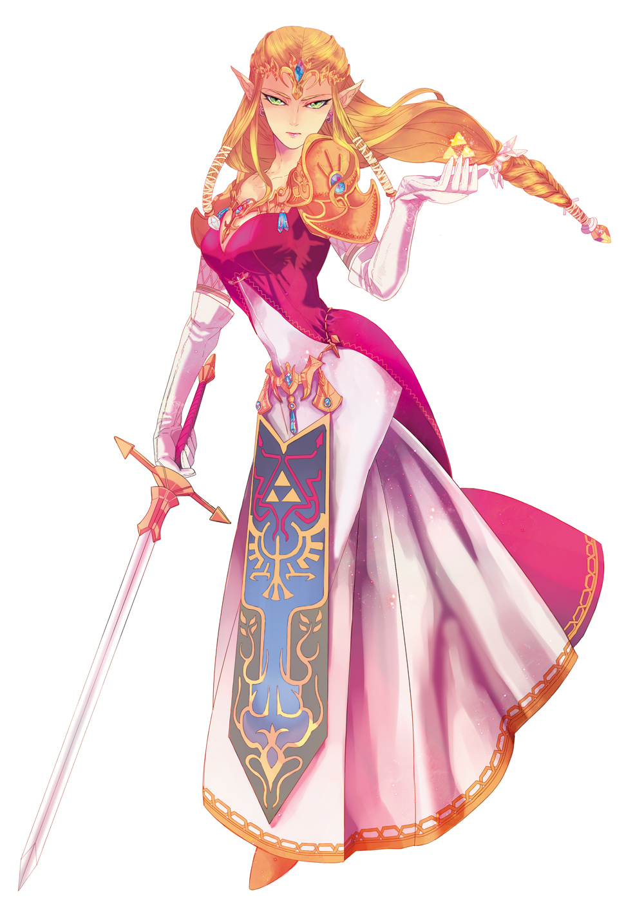

La Princesse Zelda est un personnage central de la série The Legend of Zelda. Bien que la série doive son nom à ce personnage, il ne s'agit pas d'un personnage jouable dans la série principale et elle n'est pas non plus le personnage principal. Il y a même certains jeux où elle n'apparaît pas ou très peu (comme Majora's Mask ou encore Tri Force Heroes). Il s'agit d'un membre de la famille royale d'Hyrule. Elle est la plupart du temps enlevée par Ganondorf, Vaati ou un autre antagoniste et Link doit la secourir. Comme Link, elle a de nombreuses incarnations au fil des jeux.
Elle a à peu près le même âge que Link, entre 10 et 19 ans. Elle est représentée comme une jeune fille ou une jeune femme aux cheveux blonds ou châtains en fonction des jeux (comme dans Twilight Princess) et aux oreilles pointues, une caractéristique hylienne. Ses yeux sont bleus. Elle porte souvent une robe blanche ou rose ornée du blason de la famille royale. Certains de ses artworks la représentent même avec les cheveux roux (dans Zelda I notamment, et aussi dans les Oracles).
À la différence de Link qui a généralement le même tempérament, chaque Zelda a une personnalité propre : innocente et enjouée dans Skyward Sword, responsable et sérieuse dans Twilight Princess ou au contraire, garçon manqué dans The Wind Waker, où elle sait se battre ou encore peureuse et égoïste dans Spirit Tracks, du moins au début du jeu. Cependant, une caractéristique commune dans chacune de ses apparitions réside dans le fait qu'elle reste digne de confiance pour ceux qui la connaissent.
Contrairement à ce qu’on pourrait croire, Zelda est loin d’être impuissante : elle manie l’arc dans The Wind Waker, Spirit Tracks et Twilight Princess, et l’épée dans Twilight Princess également.
Elle utilise également une magie basée sur les pouvoirs de la lumière. Ses compétences en magie sont remarquables, même si elles lui permettent rarement d’éviter la capture. Elle a notamment montré des dons comme la télépathie (elle appelle Link à distance dans A Link to the Past), la prémonition (elle sent les catastrophes arriver comme l’arrivée de Ganondorf dans Ocarina of Time ou dans les oracles du temps et des saisons) ou le changement d’apparence et d’identité (elle se change en Sheik dans Ocarina of Time et revêt les traits de Tetra dans The Wind Waker/Phantom Hourglass). Elle a également déjà créé des barrières d’énergie, des sceaux sacrés ou même immobilisé Ganon. Elle semble aussi posséder quelque chose comme une aura d’espoir : sa seule présence redonne de l’espoir aux gens. Dans Ocarina of Time, elle fut le septième Sage, permettant, à l’aide des six autres d’invoquer la Triforce.
Ses alter ego possèdent également leurs facultés propres.
WIKIPEDIA. Princesse Zelda
https://fr.wikipedia.org/wiki/Princesse_Zelda
ZELDA.WIKIA. Princesse Zelda
http://fr.zelda.wikia.com/wiki/Princesse_Zelda